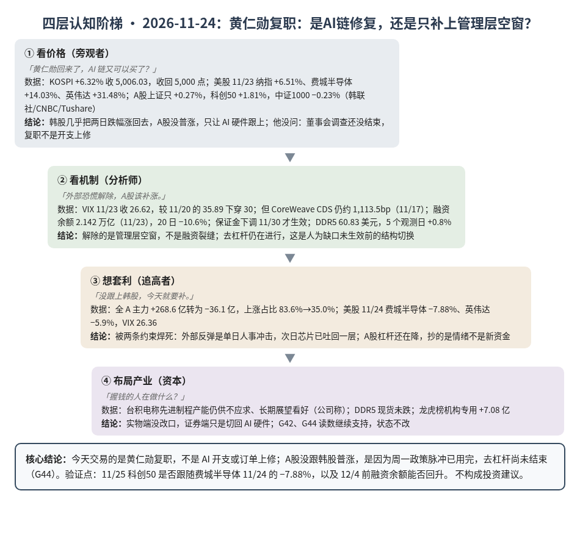
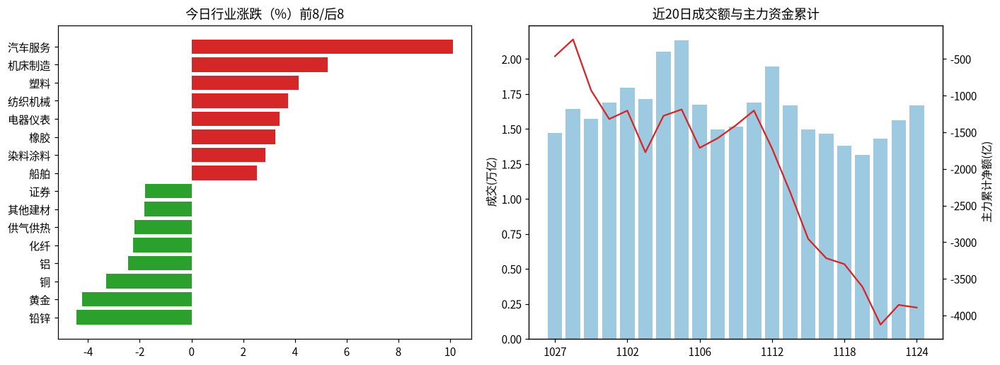
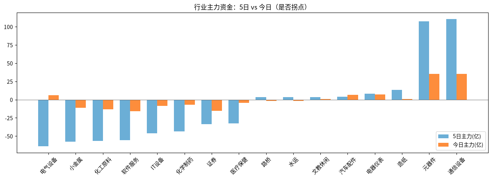

A股投研日报 · 2026-11-24（四层认知版）
- 主线
- 黄仁勋复职推高美韩芯片股，A股没普涨，资金切回 AI 硬件
- 最重要变化点
- 全 A 主力由 +268.6 亿转为 −36.1 亿，未到 −200 亿一日游线；同日 KOSPI +6.32% 收 5,006.03，收回 5,000 点
- 机制含义
- 外部从恐慌转为人事缓解（VIX 35.89→26.62），周一政策脉冲已用完；今天的钱是结构切换，不是新杠杆
- 下一个观察点
- 11/25 科创50 是否跟随费城半导体 11/24 的 −7.88%；12/4 融资余额较 11/20 的 2.151 万亿回升 ≥ +3%
本报告为基于公开数据的研究分析，不构成投资建议。
方法：四层认知阶梯 + 历史周期律。数据 Tushare（见附录）。不构成投资建议。
今日市场概况
上证 +0.27% 收 3,548.37；创业板 −0.05% 收 2,278.99，科创50 +1.81%，上证50 +0.45%，中证1000 −0.23%。成交 16,678 亿元，是 20 日均 16,451 亿元的 101%；上涨 1,952 家（35.0%），个股中位数 −0.7%。全 A 主力 −36.1 亿元。流入居前：元器件 +35.5 亿、通信设备 +35.3 亿、半导体 +12.4 亿（由 −3.8 亿转为流入）；流出居前：软件服务 −15.9 亿、证券 −15.5 亿、化工原料 −13.4 亿（Tushare）。海外：美股 11/23 纳指 +6.51% 收 24,089.56，标普 +4.73%，费城半导体 +14.03%，英伟达 +31.48%，因董事会宣布黄仁勋立即复职，特朗普称自己促成（英伟达公告、CNBC）；VIX 11/23 收 26.62，较 11/20 的 35.89 下穿 35 和 30（CBOE）。KOSPI +6.32% 收 5,006.03，三个交易日内收回 5,000 点，并触发买入侧车（韩联社）。DDR5 16Gb 现货 60.83 美元，较 11/23 的 60.70 略升（源）。美股 11/24 收盘（北京时间 11/25 05:00）纳指 −1.48%，费城半导体 −7.88%，英伟达 −5.9% 收 155.38 美元，VIX 约 26.36（MarketWatch、Investing.com）。
⚠️ VIX 预警：VIX 11/23 收 26.62（北京时间 11/24 05:00），较 11/20 的 35.89 下穿 35 和 30。历史上首次收上 30 后买入标普：1 个月胜率 69.1%、平均 +2.2%，3 个月胜率 73.4%、平均 +5.1%；无条件基准分别为 63.8%/+0.8%、70.2%/+2.4%（N=94，本地回测）。期限结构仍倒挂（VIX 26.62 / VIX3M 25.50 = 1.04）。
变化点
世界观定位：阶段不变（三国→楚汉过渡带），回退条件不变。世界指标今日天气：整体多云：钱开始变紧、股市偏贵偏热、AI 链有裂缝、中国经济还没回暖，留意。本周变化：没有变化。融资余额 11/23 为 2.142 万亿，20 日 −10.6%，仍在 −10% 危险线下方；VIX 期限结构 1.04，仍倒挂。
和昨天比：上涨占比从 83.6% 收到 35.0%，全 A 主力从 +268.6 亿转为 −36.1 亿，没有到 −200 亿的踩踏线。半导体主力从 −3.8 亿转为 +12.4 亿，科创50 转涨。同一天韩股 +6.32% 收回 5,000 点，A股只让 AI 硬件跟上，差别在周一已经用掉了政策脉冲，不是基本面分裂。
看价格：「黄仁勋回来了，AI 链又可以买了？」韩股几乎把两日跌幅涨回去，A股没跟：上证只 +0.27%，中证1000 −0.23%，涨的是科创50、半导体、元器件和通信设备。他没问：董事会调查还没结束，复职是人事缓解，不是开支上修。
看机制：「外部恐慌解除，A股该补涨。」解除的是管理层空窗，不是融资裂缝：CoreWeave 5 年 CDS 仍约 1,113.5bp（11/17），P070 三条证伪线都没触发。融资保证金下调要到 11/30 才生效；融资余额 2.142 万亿（11/23）比 11/20 的 2.151 万亿又少一截，20 日 −10.6%（推算，Tushare）。台积电称先进制程产能仍供不应求、长期展望看好（公司称，源）。风险敞口接口：复核后有效断供 Δ$≈0。
想套利：「没跟上韩股，今天就要补。」被两条约束焊死：外部反弹是单日人事冲击，11/24 美股已经把芯片涨幅吐回一层（费城半导体 −7.88%）；A股杠杆还在降，新规未生效，抄的是情绪，不是新资金。
布局产业：实物端没跟着股价摆。DDR5 16Gb 现货 60.83 美元，5 个观测日 +0.8%，G42 未逼近证伪。台积电仍说产能不够。股价在修估值，锁货的人没有改口。G44 读数继续支持。
判断：今天市场交易的是「黄仁勋回来了」，不是「AI 开支或订单上修了」。情绪从恐慌切到缓解，实物价格和融资余额都没有转向。推断A股没跟韩股普涨，是因为周一政策脉冲已经用完，而且去杠杆还没结束；美股 11/24 芯片又吐回一层，说明治理和融资争议没有消失。
中长期展望（3–12 个月与 2027）
3–12 个月：黄仁勋复职只补上管理层空窗，查账和循环融资的问题还在（P070 证伪条件未触发，概率不动）。A股去杠杆未完（G44），11/30 的保证金下调只是减震。实际利率仍高（G45），12/10 加息（P071）是下一道坎。
2027：P023 仍是总闸门；DDR5 现货不跌（G42），台积电仍称产能紧。
什么会改变展望：①融资余额 20 日增幅 ≥ +5%（G44 证伪）；②第二家小云厂 CDS >1,000bp，或任一大云下修资本开支（P070）；③英伟达董事会调查作出不利结论，或 10-Q 推迟、重述。
七、明日/本周验证点（可证伪）
- 11/25 科创50 是否跟随费城半导体 11/24 的 −7.88%：若收跌 ≥3%，则复职行情在 A 股只活一天。
- 12/4 融资余额较 11/20（2.151 万亿）回升 ≥ +3%；仍下降则政策没带来杠杆。
- 至 11/25 美股收盘 VIX 是否再上 30（11/23 已下穿至 26.62；11/24 收 26.36）。
- 至 11/27 DDR5 16Gb 现货跌破 58.85 美元，则 G42 逼近证伪。
附录 A：机会表、检查清单、验证点回顾、风险复核
机会表（产业/环节层面，不构成投资建议）
| 环节 | 变化信号 | 认知层级 | 关键风险 / 证伪 |
|---|---|---|---|
| 存储、先进封装、光模块等有 2027 年订单的 AI 硬件环节 | 台积电称先进制程产能仍供不应求；DDR5 现货 60.83 美元 | 第 2→4 层 | 四大云任一家下修 2027 资本开支（P023、P070） |
| 杠杆敏感的小盘、题材 | 周一领涨，今日上涨占比从 83.6% 收到 35.0% | 第 3 层：陷阱 | 12/4 融资余额仍降；VIX 再上 30 |
| PCB 上游材料 | 价格与交期观察不变 | 第 2 层 | 重复下单回吐（G28、P042） |
检查清单应用
- 缺口性质：黄仁勋复职是人为的人事缓解（调查未结束，可再反复），不是供需缺口变化；A股杠杆松绑仍是人为缺口，11/30 才生效。
- 替代弹性：情绪可以一天来回；产业端客户换供应商的弹性低。CoreWeave 等高杠杆环节的融资替代没有打开。
- 领先 vs 滞后：领先＝融资余额 20 日变化、VIX 期限结构、DDR5 现货、CDS；滞后＝季报利润、TTM PE、指数。
上一交易日验证点回顾（11/23 → 11/24）
| # | 验证点 | 读数 | 判定 |
|---|---|---|---|
| 1 | 11/24 全 A 主力连续第 2 日净流入；流出超 200 亿则只是一日回补 | −36.1 亿（未连续流入，也未到 −200 亿） | 未命中 |
| 2 | 12/4 融资余额较 11/20（2.151 万亿）回升 ≥ +3% | 11/23 为 2.142 万亿，续降 | 待验证 |
| 3 | 至 11/27 KOSPI 收回 5,000 点 | 5,006.03（11/24） | 命中 |
| 4 | 至 11/27 DDR5 16Gb 跌破 58.85 美元 | 60.83（11/24） | 未触发 |
供应链风险敞口（人工复核版）：脚本版见 risk_section_20261124.md。口径为 GB300/NVL72 当量柜年化系统价值；Δ$ 为事件类型假设模板，仅用于排序，非预测。脚本 1 条，误匹配 1 条（富士通 Monaka 与台积电协商扩产，属产能扩张，非断供）。复核后今日有效断供 Δ$≈0，基线维持年化 EL 57.7 亿美元（10/21）。采集降级：GDELT 限流或 0 篇；巨潮公告匹配未恢复。
总账（今日已改）：G42 追加支持证据（DDR5 60.83 美元，5 个观测日 +0.8%）；G44 追加支持证据（融资余额 11/23 为 2.142 万亿，20 日 −10.6%）。状态与概率均不改。P070 三条证伪线未触发，未改条目。
世界指标数据说明：昨晚例程已跑完 update.py（数据源 14/15 成功，multpl/CAPE 抓取失败，CAPE 沿用 11/20 的 36.4；生成后提交 world: 20261124）。AI 泡沫监控阶段读数「一顶后回撤」。五盏灯 ② 用的 10Y 实际利率 2.77% 为美国财政部 11/20 读数。VIX 11/23 收盘 26.62 已写入世界指标缓存；11/24 收盘约 26.36 为本页补记，因撰写时美股 11/24 已收盘。

一句话总结：回来的是管理层，不是加杠杆的钱；A股没跟韩股普涨，去杠杆也还没结束。
本报告为基于公开数据的研究分析，不构成任何投资建议。
附录：市场数据（证据底稿）


| 收盘 | 今日% | 5日% | 20日% | MA20 | 成交(亿) | |
|---|---|---|---|---|---|---|
| 上证指数 | 3,548.37 | 0.27 | -1.01 | -2.74 | 3,623.62 | 7,718.61 |
| 深证成指 | 10,423.60 | -0.29 | -2.02 | -7.31 | 10,948.26 | 4,582.51 |
| 创业板指 | 2,278.99 | -0.05 | -0.58 | -10.56 | 2,422.11 | 2,003.89 |
| 科创50 | 1,250.09 | 1.81 | 2.37 | -0.17 | 1,245.00 | 1,001.24 |
| 上证50 | 2,774.49 | 0.45 | 0.22 | 1.01 | 2,773.30 | 1,445.14 |
| 沪深300 | 3,963.82 | 0.14 | -0.32 | -2.12 | 4,022.94 | 5,068.66 |
| 中证500 | 6,112.43 | -0.27 | -2.71 | -6.13 | 6,422.26 | 2,728.17 |
| 中证1000 | 5,799.01 | -0.23 | -4.82 | -9.77 | 6,274.42 | 3,005.11 |
行业资金热力（按5日主力净额排序，前8/后8）
| industry | 今日% | 5日% | 20日% | 今日主力(亿) | 5日主力(亿) | 资金连续天数 |
|---|---|---|---|---|---|---|
| 通信设备 | 0.7 | 4.0 | -22.9 | 35.3 | 110.5 | 2.0 |
| 元器件 | 1.2 | 3.7 | -11.7 | 35.5 | 107.2 | 2.0 |
| 造纸 | -1.4 | -1.8 | 1.8 | 1.1 | 13.2 | 17.0 |
| 电器仪表 | 3.4 | 3.3 | -7.4 | 7.3 | 7.9 | 2.0 |
| 汽车配件 | 2.2 | 0.6 | 1.1 | 6.6 | 3.9 | 2.0 |
| 文教休闲 | 1.0 | 2.0 | -1.4 | 0.8 | 3.7 | 3.0 |
| 水运 | -0.2 | 2.1 | -2.8 | -1.9 | 3.6 | -1.0 |
| 路桥 | -1.5 | 0.9 | 25.4 | -1.5 | 3.3 | -1.0 |
| 电气设备 | 0.7 | -4.1 | -4.8 | 6.0 | -63.8 | 2.0 |
| 小金属 | -0.6 | -5.3 | -10.3 | -10.9 | -57.9 | -1.0 |
| 化工原料 | 0.8 | -1.7 | -3.9 | -13.4 | -56.5 | -1.0 |
| 软件服务 | 0.7 | 1.4 | -3.7 | -15.9 | -55.7 | -1.0 |
| IT设备 | -0.4 | -2.8 | -10.4 | -8.6 | -46.2 | -4.0 |
| 化学制药 | -0.6 | -4.8 | -5.5 | -6.7 | -43.7 | -1.0 |
| 证券 | -1.8 | -2.1 | -6.3 | -15.5 | -33.8 | -1.0 |
| 医疗保健 | -0.5 | -5.7 | -4.8 | -4.5 | -32.4 | -1.0 |
市场情绪时间序列（近10日）
| trade_date | 成交(亿) | 上涨占比% | 主力净额(亿) | 个股中位涨跌% |
|---|---|---|---|---|
| 20261111 | 16886.9 | 63.5 | 201.5 | 0.6 |
| 20261112 | 19458.7 | 15.7 | -516.5 | -1.6 |
| 20261113 | 16670.7 | 13.7 | -595.2 | -2.0 |
| 20261116 | 14941.6 | 20.4 | -640.0 | -2.1 |
| 20261117 | 14675.2 | 23.8 | -264.0 | -1.3 |
| 20261118 | 13800.2 | 23.6 | -80.3 | -1.2 |
| 20261119 | 13145.8 | 11.6 | -310.4 | -2.6 |
| 20261120 | 14311.1 | 5.6 | -514.9 | -5.1 |
| 20261123 | 15639.6 | 83.6 | 268.6 | 2.4 |
| 20261124 | 16678.0 | 35.0 | -36.1 | -0.7 |
今日上涨1952家/下跌3498家，涨幅≥9.8% 88家、跌幅≤-9.8% 9家¹。
龙虎榜侧写：机构专用席位合计 +7.08 亿；净买入居前 凡拓数创(+1.56亿)、安培龙(+1.46亿)、恒工精密(+1.36亿)，净卖出居前 粤芯半导体(-0.80亿)、西陇科学(-0.52亿)、贝特利(-0.39亿)。 沪深股通活跃股：成交前五为中际旭创、新易盛、工业富联、宁德时代、贵州茅台（成交额≠净买入）。
注：¹涨跌停为按±9.8%阈值近似（limit_list_d无权限）。²行业为Tushare stock_basic分类自行聚合（sw_daily/ths_daily/行业资金流接口无权限），成交加权、剔除N/C新股，成分≥8只。³主力=大单+特大单净额（moneyflow）。⁴2024年8月起北向每日净买入停止披露，moneyflow_hsgt/hsgt_top10数值为成交口径，不可解读为净流入。⁵新闻/公告接口无权限，改用新浪财经7x24公开快讯自动抓取+人工补充。
接口状态：trade_cal:OK；stock_basic:OK；index_daily:OK；moneyflow_hsgt:OK；hsgt_top10:OK；top_list:OK；top_inst:OK；index_dailybasic:OK；新浪7x24(公开):OK 3000条（11-23 14:58 起）